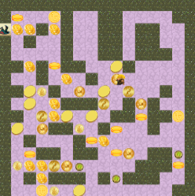

Willy Jiang

About Me
Hi! I'm Willy, a sophomore at Cornell University majoring in Computer Science and Math. I am passionate about educating future generations in STEM. In my free time, I love playing tennis, chess, and rhythm games.
Projects
-

Stuck in the Desert
Built a top-down puzzle game in OCaml based on Stuck in the Sewers in which the player navigates through pipes and collects coins throughout various levels. Created a final boss that follows the player while they try to escape.
-

London Sewer System
Implemented Dijkstra's algorithm using a modified DFS in Java to locate a ring in a maze given only the current distance to the ring. Developed a recursive algorithm using heaps to collect differently weighted coins while leaving the maze in a limited number of steps.